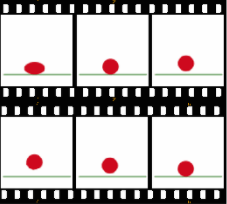

What You Should Know - Animation-ish: Quadrilateral Story
 Important Vocabulary
Important Vocabulary
- Shape - the form of an object
- Quadrilateral - a four-sided shape
- Attribute - a characteristic or way to describe something
- Animation - moving pictures that tell a story
- Optical Illusion - something that tricks the eye making you see something different than what is actually there
Shapes and Their Attributes
You already know that there are many different kinds of shapes. Shapes are geometric figures that are closed. Rectangles, circles, squares, and rhombuses are just a few types of shapes.
You can find shapes in your everyday life. Think about the shape of things you use every day, such as cereal boxes, books, beds, etc. Shapes are all around you. Some shapes share common attributes. An attribute is a characteristic.

What shapes can you see in the picture? Do you see circles, squares, and rectangles?

A triangle’s attributes are 3 corners and 3 sides or edges. A circle is round and has no sides or corners. Think about shapes that share a common attribute. Squares and rectangles both have 4 sides and 4 corners. What other shapes can you think of that share a common attribute?
Quadrilaterals
Many shapes share common attributes. One common attribute or characteristic is the number of sides a shape has. Let’s think about a square and a rhombus. They both have 4 sides. Other shapes also have 4 sides: rectangles, trapezoids, parallelograms, and kites. All of these shapes are called quadrilaterals. They share the attribute of having four sides. Any shape that has four sides is also quadrilateral.

Look around the room. What quadrilaterals can you find? Perhaps a rectangular book or a square table? Shapes are all around you.
What Is an Animation?
Animation uses pictures and motion to tell a story or show action.
Animations can be simple, like a bouncing ball. Animations can also be complex, like a whole movie.
Animation tricks the brain into thinking there is motion. Animation rapidly plays images.
The images are almost the same. When pictures change quickly and only have small changes between them, your brain thinks there is movement. This is called an optical illusion.

What Is Animation-ish?
Animation-ish allows you to animate your ideas!
By making small changes in your pictures, they will appear to move.
You will use Wiggledoodle-ish and FlipBook-ish to animate your drawings.
Wiggle and Flip What?
- Use Wiggledoodle-ish to learn the basics of animation. You will draw three pictures and play them fast.
- FlipBook-ish allows you to draw lots of pictures. Having more drawings allows you to create a longer, more detailed story.
Career Connection and Real-World Application
Animator
Animators create animations. Animations are drawings that come to life. People with a career as an animator or “multimedia artists” make visual effects for films and television. They even animate video games. In order to create films and games, animators build storyboards; they may even script, or write, the story. Animators use different types of software to do their job.
Tile/Floor Installer
Many careers or jobs in flooring require individuals to work with quadrilaterals. Laying down tile as a tile installer is one of those jobs. Tiles are cut to fit certain areas. Tiles come in many sizes and shapes. However, most are quadrilaterals, having four sides.